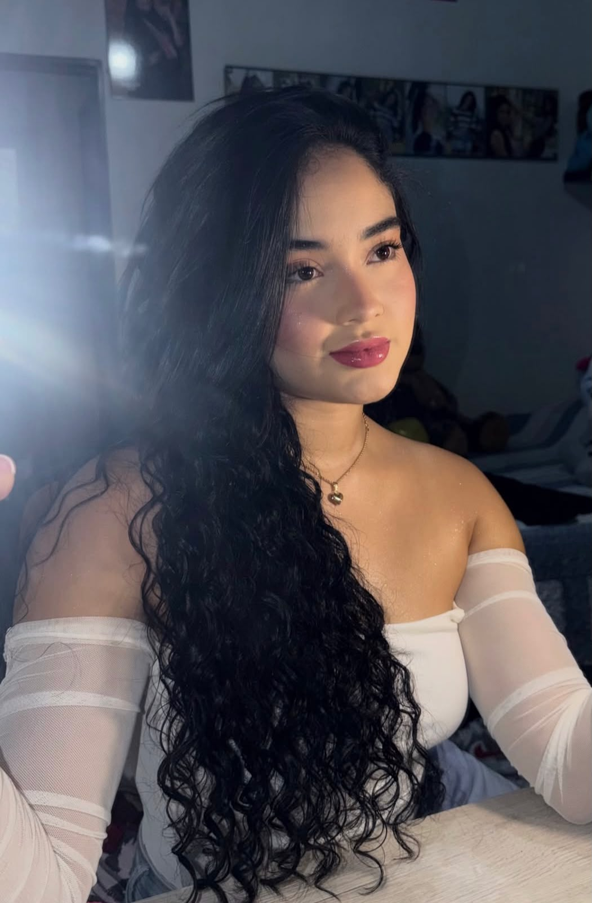
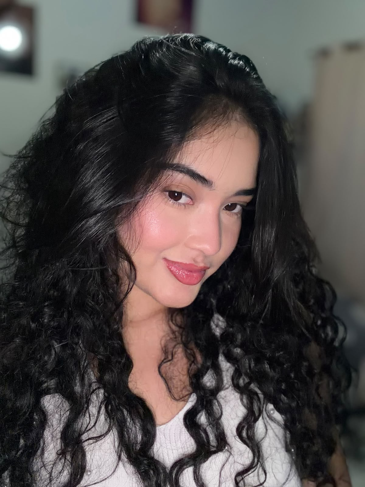
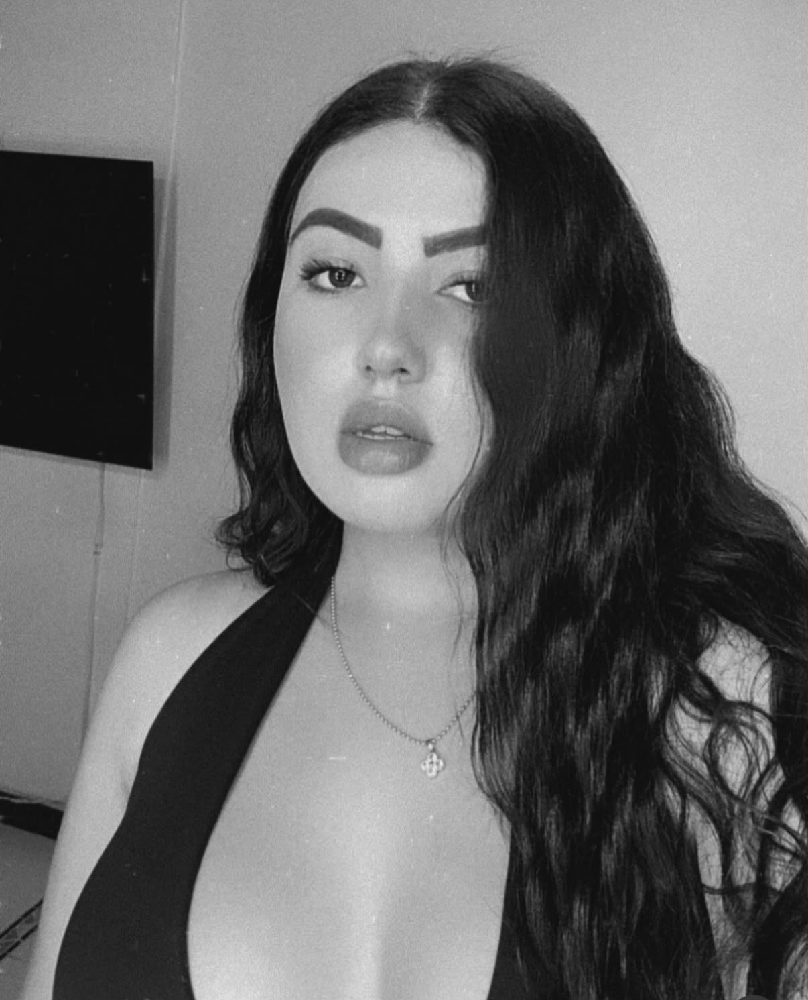
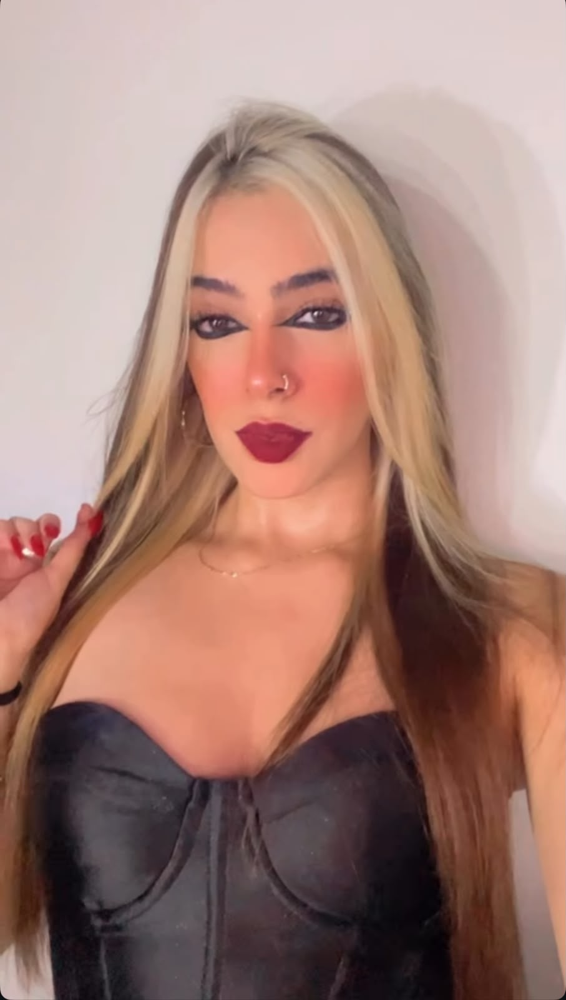
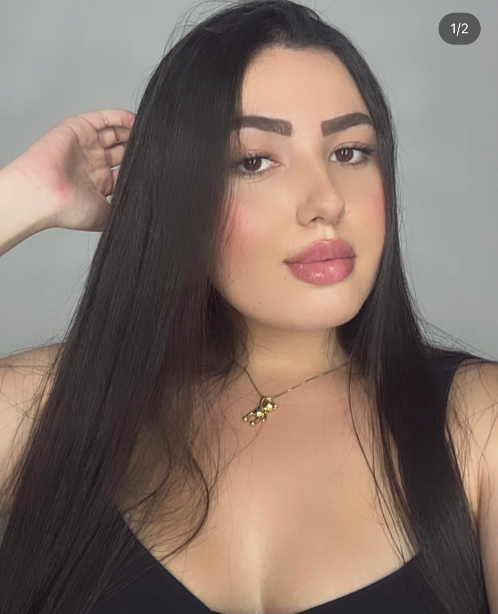
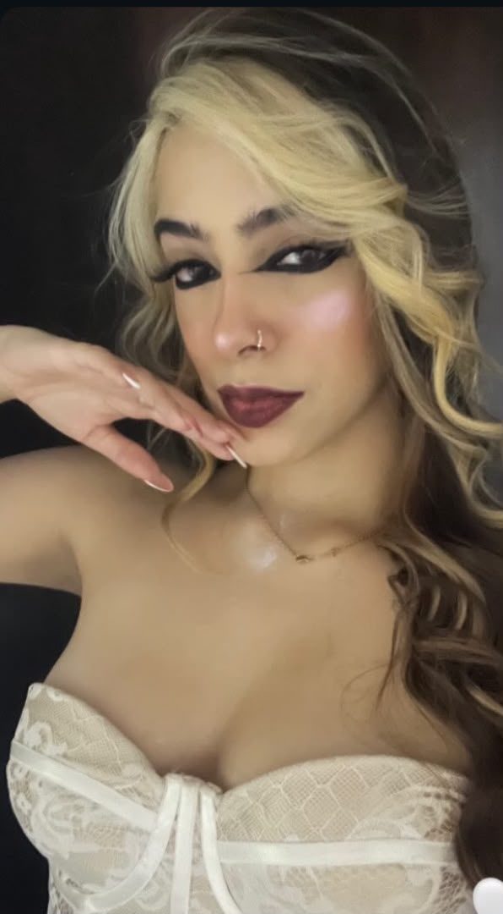
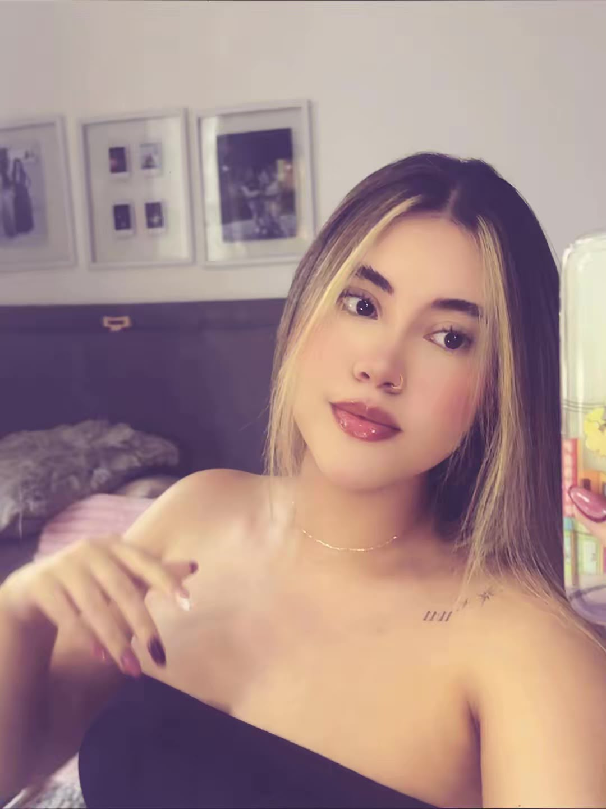
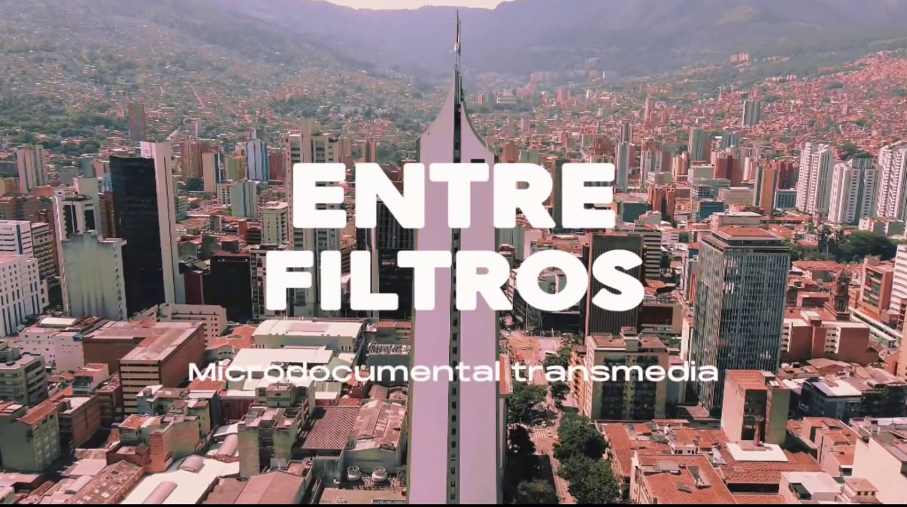
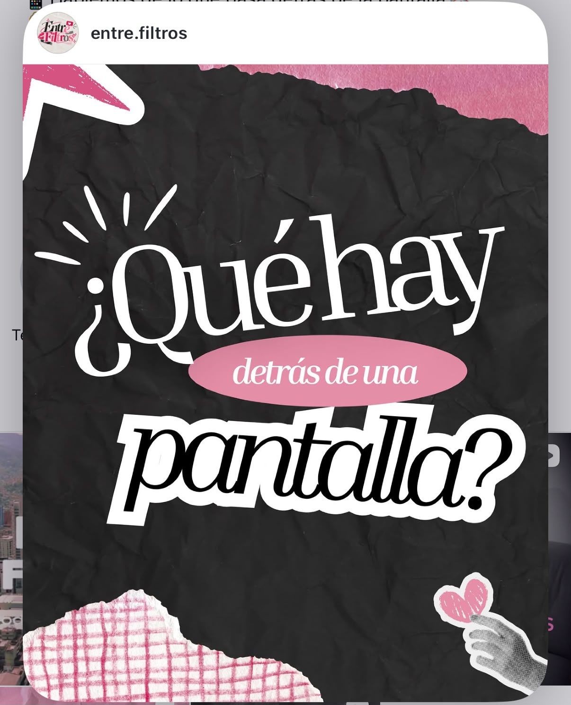
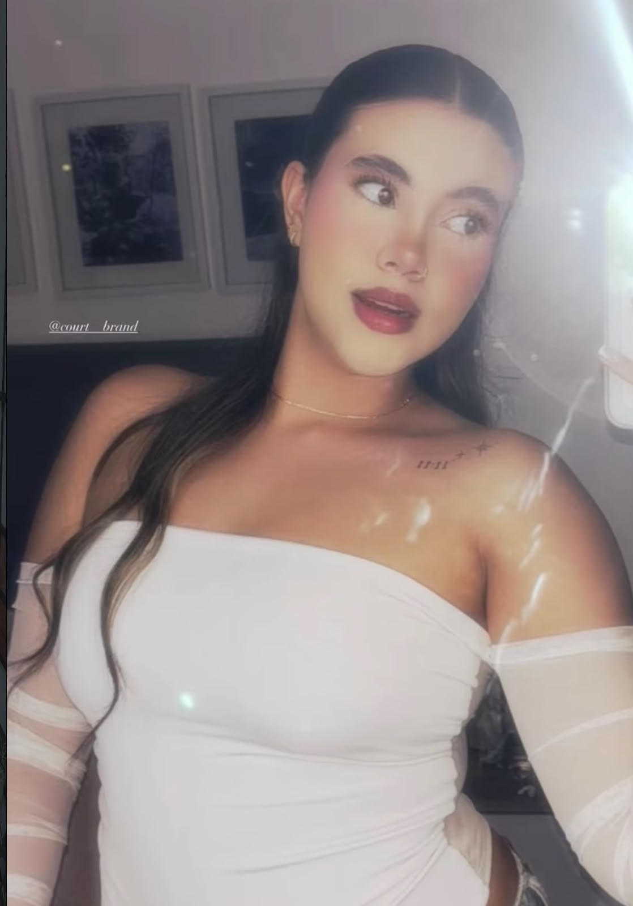

★Valentina
22 años“Quiero que los demás siempre vean esa versión perfecta de mí.”
Conocer historiaDetrás de lo que mostramos, existe una historia que no siempre se ve.
Cuatro historias, una misma pregunta: ¿cuánto de lo que queremos ser nace de nosotras y cuánto de lo que vemos en redes?

Explora la relación entre lo que mostramos en redes y lo que realmente vivimos a través de las historias de cuatro jóvenes, sus pensamientos, sus dudas y lo que hay detrás de cada publicación.
Conoce más
Más que fotos bonitas
Una historia real, contada desde la honestidadEn redes podemos construir una versión de nuestra vida en la que todo parece estar bajo control.
Pero ¿qué sucede antes de tomar esa foto? ¿Qué sentimos cuando no nos gusta cómo nos vemos?
Acompaña a Valentina y conoce también las historias de Mariana, Sara y Laura.
Ver el documentalCuatro historias diferentes, una misma pregunta: ¿cuánto de lo que queremos ser nace de nosotras y cuánto de lo que vemos en redes?

★“Quiero que los demás siempre vean esa versión perfecta de mí.”
Conocer historia
?“Quiero verme como siento que debería verme cuando me comparo.”
Conocer historia
♥“Siento que a mi edad ya debería haber logrado muchas más cosas.”
Conocer historia
?“Quiero ser yo, pero también quiero encajar.”
Conocer historiaDesliza y descubre lo que mostramos, lo que ocultamos y lo que somos.
Elegimos qué fotografías publicar, qué momentos contar y qué imagen queremos proyectar. Una publicación puede mostrar algo que realmente vivimos, pero nunca cuenta toda nuestra historia.
Este es un espacio para compartir tus pensamientos de forma anónima y ser parte de esta conversación.
Una historia que se vive en diferentes espacios y te invita a mirar más allá de lo que ves en pantalla.

Conoce sus historias y lo que hay detrás de cada publicación.

Descubre más sobre las protagonistas, explora los temas y deja tu reflexión.

La conversación también llega fuera de la pantalla con una experiencia para escribir lo que mostramos y lo que ocultamos.
Un espacio para hablar de lo que mostramos, lo que sentimos y todo aquello que queda detrás de una publicación.
Ir a Instagram